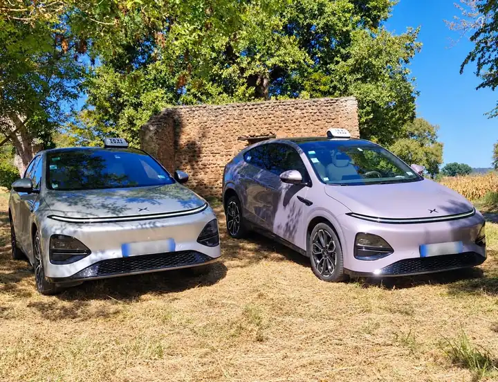
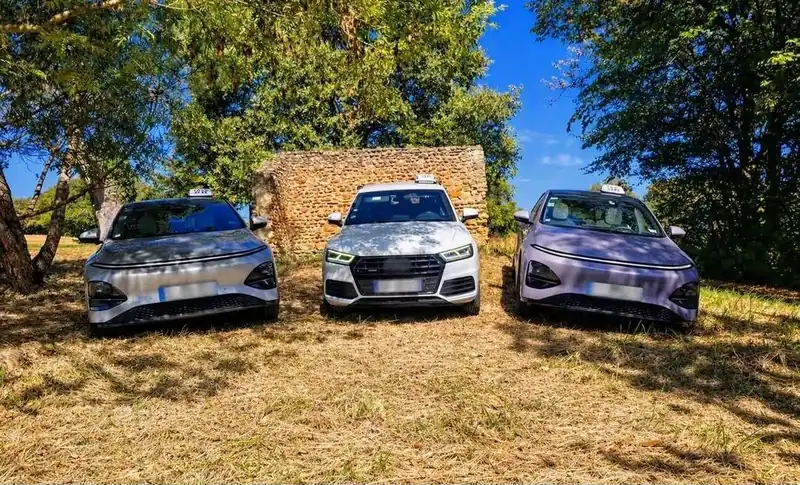
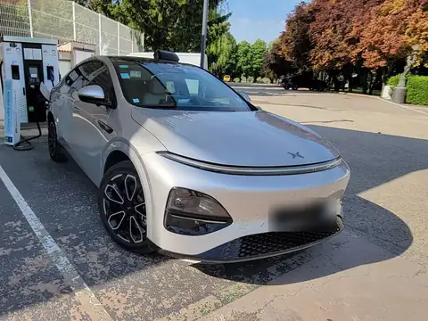

Taxi conventionné CPAM
Consultations, examens, hospitalisations, soins réguliers : vos trajets médicaux pris en charge par l'Assurance Maladie, avec un accompagnement de la porte à la porte.
Taxi familial & conventionné CPAM · Saint-Jean-Poudge
Nous sommes une famille du Vic-Bilh : un père, une mère, leur fils, et un taxi chacun. Rendez-vous médicaux, aéroport, soirées ou longues distances jusqu'en Espagne : on vous conduit comme on conduirait les nôtres, 24h/24 et 7j/7.

Une entreprise familialeLe père, la mère et le fils : un taxi chacun.
Bonjour !
Taxi du Vic-Bilh, c'est nous : le père, la mère et le fils, chacun au volant de son taxi, installés à Saint-Jean-Poudge au milieu des coteaux. On connaît ces routes par cœur, et on sait ce que représente un rendez-vous à l'hôpital, un avion à ne pas rater ou une soirée qu'on veut savourer sans penser au retour.
Alors on a créé, en famille, le taxi qu'on voulait pour nos propres proches : ponctuel, rassurant, joignable à toute heure, et qui ne vous traite jamais comme un simple numéro de course.
La famille Taxi du Vic-Bilh


Nos services
Du bon de transport pour l'hôpital au vol de 6 h du matin, chaque trajet est préparé avec soin. Voir une journée avec nous
Consultations, examens, hospitalisations, soins réguliers : vos trajets médicaux pris en charge par l'Assurance Maladie, avec un accompagnement de la porte à la porte.
Pau-Pyrénées, Tarbes-Lourdes, Bordeaux, Toulouse, Biarritz : on vous dépose à l'heure, on vous attend au retour, bagages compris.
Bordeaux, Toulouse, la côte basque et jusqu'en Espagne : un trajet direct et confortable, sur devis, sans correspondance.
Rendez-vous clients, collaborateurs à transférer, déplacements réguliers : un chauffeur ponctuel et discret, en véhicule électrique.
Courses du quotidien, fêtes de famille, mariages, soirées ou dégustation au pays du Madiran : on vous ramène en toute sécurité.
Le planificateur de la famille
Dites-nous où vous allez et à quelle heure vous devez y être. On vous dit quand on passe vous chercher, combien de sièges enfants prévoir, et s'il faut un ou deux taxis.
Estimation indicative au départ de Saint-Jean-Poudge, hors circulation. Pour un trajet médical conventionné, l'horaire suit votre prescription.
On passe vous chercher à
8 h 00
Pau≈ 40 km · environ 45 min de route
Pensez au doudou !
Taxi conventionné CPAM
Vous avez assez à penser avec votre santé. Pour la route, on s'occupe de tout, et on vous accompagne jusqu'à la porte du service.
Il vous remet une prescription médicale de transport adaptée à votre situation.
On fixe ensemble l'horaire, le lieu de prise en charge et le retour. On vous explique l'accord préalable si besoin.
De votre porte jusqu'au service, à Pau, Tarbes, Mont-de-Marsan, Bordeaux ou Toulouse. Puis retour à la maison.
Et on s'occupe du reste !
Le tableau de route
Les destinations que nous faisons le plus souvent, au départ de Saint-Jean-Poudge. Pour tout le reste, il suffit de demander.
Bordeaux ? On y était encore cette semaine !
Distances et temps indicatifs au départ de Saint-Jean-Poudge, hors conditions de circulation.
Avis
Nous sommes une jeune entreprise familiale : chaque avis aide d'autres familles du Vic-Bilh à nous faire confiance.
Questions fréquentes
Oui. Taxi du Vic-Bilh roule 24h/24 et 7j/7, jours fériés compris. Pour être sûr d'avoir un véhicule à l'heure voulue, réservez à l'avance par téléphone, même la veille au soir.
Dans la plupart des cas, non : nous pratiquons le tiers payant et la CPAM nous règle directement la part qu'elle prend en charge. Selon votre situation, un reste à charge (ticket modérateur, franchise médicale) peut s'appliquer ; votre mutuelle peut le couvrir.
Pour certains transports, oui : par exemple les trajets de plus de 150 km ou les transports en série (au moins quatre trajets de plus de 50 km sur deux mois pour un même traitement). Nous vous expliquons la démarche lors de la réservation.
Oui, nous sommes parents nous aussi. Indiquez l'âge des enfants à la réservation : nous installons le siège auto ou le rehausseur adapté.
Les tarifs des taxis sont réglementés par arrêté préfectoral. Pour les longues distances, nous vous établissons un devis gratuit avant le départ : le prix annoncé est celui que vous payez.
Jusqu'à 4 passagers par véhicule, avec leurs bagages. Pour un groupe plus grand, nous organisons le trajet avec nos trois véhicules.
Oui. Nous faisons toutes distances, Espagne comprise : Saint-Sébastien, Pampelune, Saragosse ou plus loin. Nous vous établissons un devis gratuit avant le départ, et le prix annoncé est celui que vous payez.
Par téléphone au 06 12 69 43 31, de jour comme de nuit, par e-mail à taxiduvicbilh@gmail.com, ou avec le formulaire de la page Contact. Nous vous confirmons toujours la course.
Un appel suffit pour réserver, demander un devis ou organiser un trajet médical.